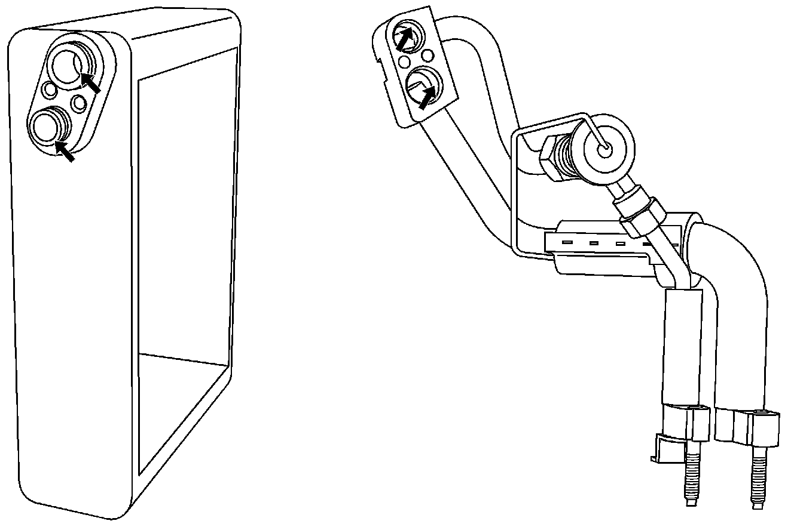

A/C - Leaks From Rear Evaporator Connector Block
Bulletin No.: 07-01-39-009Date: December 17, 2007
INFORMATION
Subject:
Information on a Possible Air Conditioning Refrigerant System Leak at Rear Evaporator Core Connector Block
Models:
2005-2008 Cadillac SRX
with Rear Air Conditioning (RPO C57)

The purpose of this bulletin is to alert the field to a possible Air Conditioning (A/C) refrigerant system leak location that may be difficult to locate and diagnose. The evaporator core block fitting connection in the auxiliary A/C module may be the source of a refrigerant system leak. Some evaporator cores and connector block fittings may have brazing flux on the sealing surfaces. Refer to the arrows in the illustration above for the locations that may be affected. The leaks may be small and difficult to locate.
Technicians should inspect the rest of the A/C system for refrigerant leaks and repair any that are found before removing the auxiliary A/C module to diagnose the block fitting and rear evaporator core. On some vehicles, leak dye may be detected in the auxiliary A/C module drain tube underneath the vehicle, but the leak may be so small that no dye is visible. If no leaks are found in any other area of the vehicle, the auxiliary A/C module should be removed and disassembled to diagnose the components inside. If the block fitting is the source of the leak, the 0-ring seals should be inspected for tears, nicks or contamination. The block fitting and evaporator core sealing surfaces should be inspected for brazing flux. If brazing flux is found, it can be removed using a sponge tip swab dipped in alcohol. Use compressed air to blow out the parts to insure that no foreign material is left in the parts. The connector block 0-rings should be replaced and then the auxiliary A/C module should be reassembled and reinstalled on the vehicle.
Do not use abrasives (sandpaper, emory cloth, Scothbrite, etc.) to remove the flux. The use of an abrasive to clean off the flux will leave a rough finish on the component sealing surfaces and may cause another leak.

Disclaimer